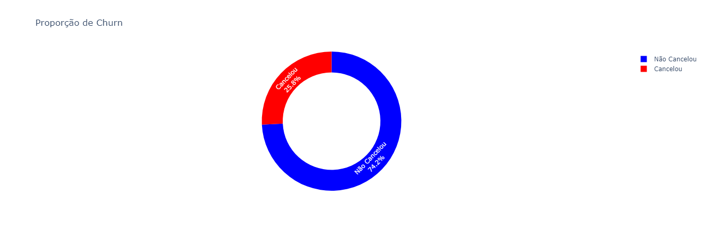
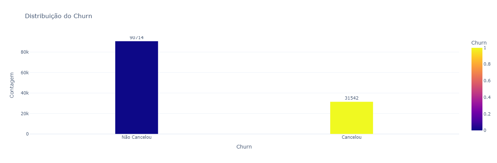
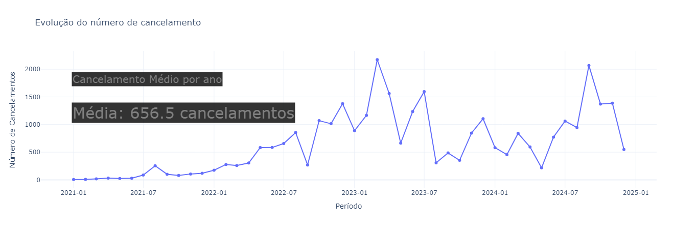
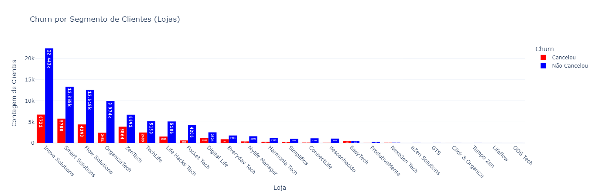
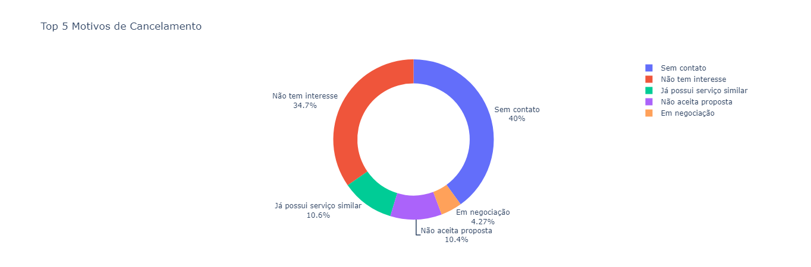
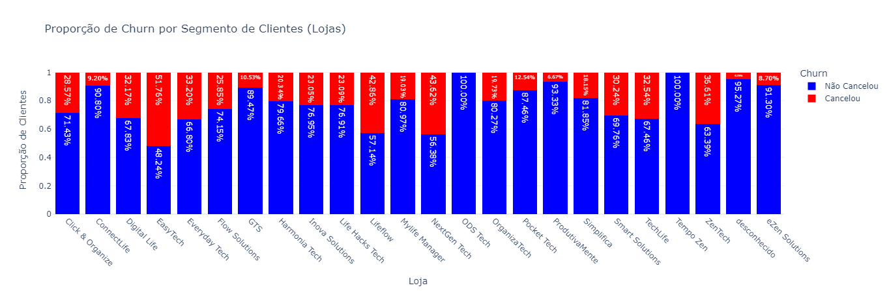
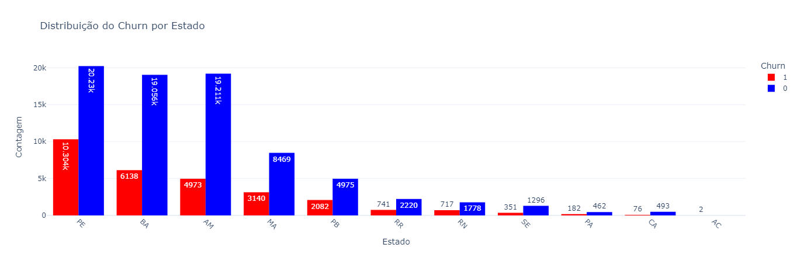
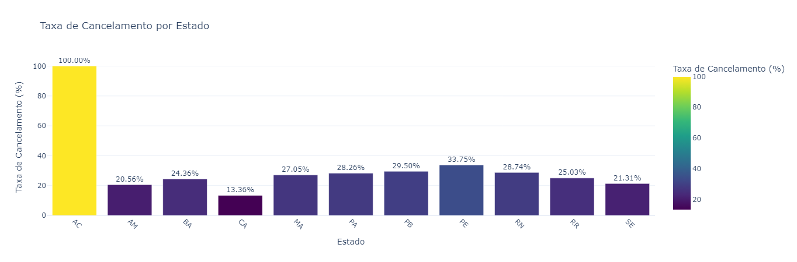
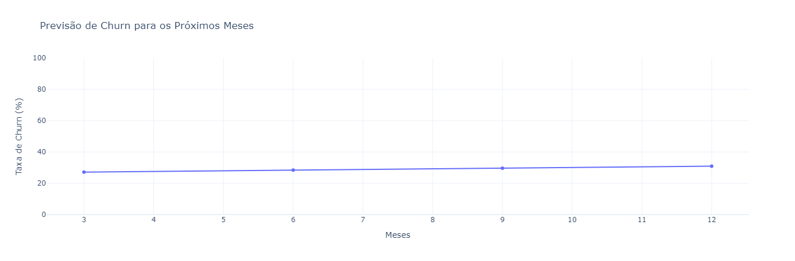

Relatório técnico:Previsão de Churn
Introdução
O estudo teve como foco atender aos seguintes objetivos estratégicos:
Identificar os principais motivos do churn: Determinar os fatores que levam os clientes a cancelar seus contratos.
Segmentar os clientes com base no risco de churn: Criar categorias de clientes de acordo com sua propensão ao churn.
Propor estratégias eficazes para reduzir o churn: Recomendar ações práticas e orientadas por dados para melhorar a retenção de clientes.
Nota
Interaja clicando nas tabelas e gráficos, para visualizar os resultado
Metodologia
O estudo teve como foco atender aos seguintes objetivos estratégicos:
Identificar os principais motivos do churn: Determinar os fatores que levam os clientes a cancelar seus contratos.
Segmentar os clientes com base no risco de churn: Criar categorias de clientes de acordo com sua propensão ao churn.
Propor estratégias eficazes para reduzir o churn: Recomendar ações práticas e orientadas por dados para melhorar a retenção de clientes.
Tratamento dos Dados
O objetivo desta etapa foi garantir a consistência e a qualidade do dataset, tratando valores ausentes, eliminando inconsistências e ajustando os dados para análises exploratórias e modelagem preditiva.
O dataset utilizado, intitulado Base de Contratos.xlsx, contém 122.256 registros e 16 colunas, abrangendo informações de clientes, contratos, renovações, cancelamentos e engajamento com o aplicativo. Durante a inspeção inicial, foram identificados valores ausentes em várias colunas, como estado, consultor, e data_do_pagamento. Algumas inconsistências também foram encontradas, como valores irreais nas variáveis de duração de contratos
Carregamento Inicial
- O dataset inicial possuía 122.256 registros e 16 colunas com informações de clientes, contratos, renovações, cancelamentos e engajamento com o aplicativo. Durante a inspeção inicial, foram identificados valores ausentes em diversas colunas, como estado (15.103 valores ausentes), consultor (98.446 valores ausentes), e data_do_pagamento (104.137 valores ausentes). Além disso, foram detectados valores inconsistentes em variáveis de duração de contratos e outros registros.
Tratamento de Valores Ausentes
Variáveis Categóricas: Foram preenchidas com valores que representassem adequadamente a ausência de informações: filial_de_contratacao e estado: Substituídos por ‘desconhecido’. consultor: Preenchido com ‘nao_informado’. disponibilidade_do_servico: Substituído por ‘nao_disponivel’.
Variáveis Numéricas e Temporais: Ajustadas conforme o contexto: data_do_pagamento e data_de_cancelamento foram utilizadas para criar variáveis indicadoras de status (e.g., pagamentos realizados ou cancelamentos).
Criação de Novas Variáveis
Com base nos ajustes realizados, foram criadas variáveis adicionais para facilitar a análise e modelagem:
Churn: Indicador binário que identifica se o cliente cancelou o contrato.
Engajamento: Variável que representa se o cliente acessou ou não o aplicativo durante a vigência do contrato.
Pagamentos: Variável que indica se houve registro de pagamento
Resultado Final
Após o tratamento, o dataset final apresenta as seguintes características:
Tamanho: 122.256 registros e 16 colunas.
Principais Ajustes Realizados:
Valores ausentes tratados e inconsistências corrigidas
Variáveis categóricas padronizadas
Novas variáveis criadas para análise e modelagem preditiv
Análise Exploratória
- A análise exploratória teve como finalidade identificar padrões, tendências e relações nos dados que possam ajudar a explicar o comportamento de churn dos clientes. Essa etapa também serviu para selecionar variáveis relevantes para a modelagem preditiva e identificar possíveis melhorias para o negócio.
Informações Retiradas
Aproximadamente 25% dos clientes cancelaram seus contratos, enquanto 74% permaneceram ativos, totalizando 90.714 clientes que não cancelaram. Essa proporção indica que, embora a maior parte dos clientes tenha sido retida, a taxa de churn é significativa e requer ações imediatas.
O número de cancelamentos apresentou uma tendência crescente a partir de 2022, com um pico significativo em março de 2023, quando 2.173 contratos foram cancelados. O número de cancelamentos continuou a crescer, atingindo seu valor máximo em 2024. A média mensal de cancelamentos foi de 656 contratos. Esses números demonstram que o churn é um problema em expansão, impactando diretamente a receita da empresa.
Entre os clientes que cancelaram seus contratos, os principais motivos registrados foram:
Falta de contato: Representou 40% dos cancelamentos, destacando a importância de um acompanhamento mais próximo dos clientes.
Desinteresse pelo serviço: Correspondeu a 34% dos cancelamentos, indicando a necessidade de melhorar a proposta de valor percebida pelos clientes.
Principais Insights
Proporção de Retenção: Apesar de 74% dos clientes ainda estarem ativos, o aumento contínuo no churn ameaça a sustentabilidade do negócio.
Tendências Temporais: O crescimento do churn, especialmente após 2022, reforça a urgência em implementar estratégias de retenção mais eficazes. Motivos Críticos:
A falta de contato com os clientes é o principal fator de churn, sugerindo oportunidades para melhorias nos processos de comunicação e acompanhamento. O desinteresse pelo serviço reflete a necessidade de ajustar os serviços oferecidos para atender melhor às expectativas dos clientes.
Nota
Interaja clicando, para visualizar os resultado
Proporção e resultado ao longo do tempo


Resultado por Loja



Resultado por Estado


Modelo Preditivo
- O objetivo da modelagem preditiva foi identificar os clientes com maior probabilidade de churn nos próximos meses, permitindo que a empresa implemente ações proativas para reduzir o número de cancelamentos.
Etapas da Modelagem
As variáveis preditoras foram selecionadas considerando aspectos como duração do contrato, engajamento com o aplicativo, disponibilidade do serviço, e histórico de pagamentos. Os dados foram tratados para corrigir valores ausentes, escalonados para padronização, e variáveis categóricas foram codificadas usando One-Hot Encoding.
O dataset foi balanceado com a técnica SMOTE, resultando em uma distribuição equilibrada entre as classes (churn = 1 e churn = 0), com 50% para cada
Modelo Preditivo
A Regressão Logística foi utilizada como o modelo preditivo, devido à sua simplicidade, interpretabilidade e bom desempenho em problemas binários como o churn.
O modelo Logit (ou Regressão Logística) é um método estatístico amplamente utilizado para problemas de classificação binária, onde o objetivo é prever a probabilidade de um evento ocorrer ou não. Ele modela a relação entre uma variável dependente binária (neste caso, churn, que assume os valores 1 ou 0) e uma ou mais variáveis independentes (features ou preditores).
O Logit usa a seguinte fórmula para estimar probabilidades:
\[ \hat{y} = \frac{1}{1 + e^{-(\beta_0 + \beta_1x_1 + \beta_2x_2 + \dots + \beta_nx_n)}} \]Resultados do Modelo
O dataset foi dividido em treino (70%) e teste (30%).
O modelo foi treinado no conjunto balanceado e avaliado com métricas padrão da área:
AUC-ROC: 0,95 (excelente separação entre churn e não churn).
Precisão: 86%.
F1-Score: 88%.
RMSE (Erro Quadrático Médio): 0,29.
O modelo alcançou uma acurácia geral de 88%, demonstrando alta capacidade preditiva. A matriz de confusão indicou uma boa identificação tanto de clientes propensos ao churn quanto dos que permaneceram.
Previsão fora da amostra
O modelo foi aplicado para prever a taxa de churn cumulativa em períodos futuros de 3, 6, 9 e 12 meses, considerando uma taxa inicial de churn de 25,8%.
| Período (Meses) | Taxa de Churn Prevista (%) |
|---|---|
| 3 | 27,09 |
| 6 | 28,38 |
| 9 | 29,67 |
| 12 | 30,96 |
| ———————- | ——————————- |
O aumento gradual na taxa de churn reforça a necessidade de ações preventivas para conter a escalada de cancelamentos.
Previsão fora da amostra

Conclusões e observações finais
Os principais fatores associados ao churn foram o baixo engajamento no aplicativo, contratos curtos e problemas de disponibilidade do serviço. A previsão para os próximos 12 meses indica um aumento gradual da taxa de churn, reforçando a necessidade de ações imediatas.
Próximos Passos para Aprimorar o Desempenho:
Testar Random Forest ou Gradient Boosting para alcançar maior robustez e precisão preditiva. Implementar modelos ensemble, combinando diferentes algoritmos para aumentar a performance, alinhado às melhores práticas da literatura.